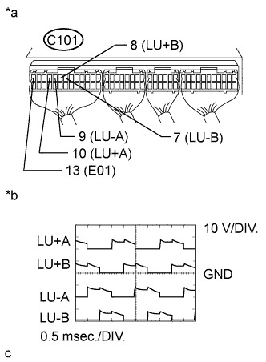

DTC 15 (4) Throttle Motor Circuit Malfunction |
| DTC No. | DTC Detection Condition | Trouble Area |
| 15 (4) | Open or short in the throttle control motor circuit. |
|
| Open or short in the throttle open switch circuit. |
| 1.INSPECT DIESEL THROTTLE BODY (THROTTLE OPEN SWITCH) |
Inspect the throttle open switch (See page Нажмите здесь).
|
| ||||
| OK | |
| 2.CHECK HARNESS AND CONNECTOR (THROTTLE OPEN SWITCH - ECM AND BODY GROUND) |
Disconnect the throttle open switch connector.
Disconnect the ECM connector.
Measure the resistance according to the value(s) in the table below.
| Tester Connection | Condition | Specified Condition |
| C110-1 - Body ground | Always | Below 1 Ω |
| C102-15 (THOP) - C110-2 | Always | Below 1 Ω |
| Tester Connection | Condition | Specified Condition |
| C102-15 (THOP) or C110-2 - Body ground | Always | 10 kΩ or higher |
Reconnect the throttle open switch connector.
Reconnect the ECM connector.
|
| ||||
| OK | |
| 3.CHECK ECM (THROTTLE CONTROL MOTOR CIRCUIT) |
|  |
During engine racing, check the waveforms according to the value(s) in the table below.
| Tester Connection | Condition | Specified Condition |
| C101-10 (LU+A) - C101-13 (E01) | Engine racing | Correct waveform is as shown |
| C101-9 (LU-A) - C101-13 (E01) | Engine racing | Correct waveform is as shown |
| C101-8 (LU+B) - C101-13 (E01) | Engine racing | Correct waveform is as shown |
| C101-7 (LU-B) - C101-13 (E01) | Engine racing | Correct waveform is as shown |
| *a | Component with harness connected (ECM) |
| *b | Signal waveforms |
|
| ||||
| OK | ||
| ||
| 4.INSPECT DIESEL THROTTLE BODY (THROTTLE CONTROL MOTOR) |
Inspect the throttle control motor (See page Нажмите здесь).
|
| ||||
| OK | |
| 5.CHECK HARNESS AND CONNECTOR (THROTTLE CONTROL MOTOR - ECM) |
Disconnect the throttle control motor connector.
Disconnect the ECM connector.
Measure the resistance according to the value(s) in the table below.
| Tester Connection | Condition | Specified Condition |
| C105-6 - C101-10 (LU+A) | Always | Below 1 Ω |
| C105-4 - C101-9 (LU-A) | Always | Below 1 Ω |
| C105-3 - C101-8 (LU+B) | Always | Below 1 Ω |
| C105-1 - C101-7 (LU-B) | Always | Below 1 Ω |
| Tester Connection | Condition | Specified Condition |
| C105-6 or C101-10 (LU+A) - Body ground | Always | 10 kΩ or higher |
| C105-4 or C101-9 (LU-A) - Body ground | Always | 10 kΩ or higher |
| C105-3 or C101-8 (LU+B) - Body ground | Always | 10 kΩ or higher |
| C105-1 or C101-7 (LU-B) - Body ground | Always | 10 kΩ or higher |
Reconnect the throttle control motor connector.
Reconnect the ECM connector.
|
| ||||
| OK | ||
| ||